"시간표대로 짜여진 학생때와는 달리, 대학생이
되니까 나 혼자 계획을 세우고 실천해야하는게
너무 어려워 "
GET GOAL
개골 개골(Get Goal, Get Goal)은 주기적인 목표를 설정하고
달성해야 하는 학생과 직장인을 위해 특별히 고안되었습니다.
도전과제 및 결과 공유를 통해 사용자가 지정한 목표를 추적하고 달성할 수
있도록 도와주는 모바일 앱을 설계했습니다
01Situation
- 목표관리의 어려움
- 목표에 대한 구체적인 계획의 부재
- 성취감 감소
- 진행과정 확인의 어려움
02Mind Map
목표
-
계획
- 공유
- 미션제공
-
코칭
- 응원
- 피드백
-
성취감
- 도장채우기
- 레벨업
-
재미
- 스티커팩
- 레벨업
03Solution
- 응원&격려메시지
- 목표 달성 상태 확인창
- 목표 달성 이력을 공유
- 미션(과제) 부여
- 포인트 부여
- 코칭&자문 서비스
04Unmet Needs
-
10대~30대
주기적인 목표를
고객
설정 및 달성 해야하는
학생과 직장인 -
친숙하게
처음 이용하는 플램폼을
습관화
익숙하게 느끼며
장기적으로 사용하게 됨 -
새로운 도전
지속적인 목표달성을 위한
금주의 도전과제로
매번 새롭게!
05Brand Direction
- 사용자중심
- 지속가능성
- 사회적연결
"우리 브랜드는 사용자들의 개인적인 성취와 긍정적인 경험을 촉진하며,
협력과 동기부여를 통해 더 나은 자아실현을 지원합니다."
06Brand Direction

-
장점 : 일정 및 알림 설정 기능
사용자는 간단하게 목표를 일정에 추가하고, 알림을 설정하여 목표에
집중할 수 있습니다 -
단점 : 리워드 다양성 부족
리워드가 한정적이어서, 사용자들이 도전에 대한 다양한 동기부여를 받기
어려울 수 있습니다
-
장점 : 일정 및 알림 설정 기능
간단하게 목표를 일정에 추가하고, 알림을 설정하여 목표에 집중할 수 있습니다 -
단점 : 모티베이션 감소
일부 사용자는 초기에는 목표를 달성하기 위해 높은 모티베이션을 가지지만,
시간이 지남에 따라 모티베이션이 감소할 수 있습니다
07Target
Main Target
개인 개발 및 성장을 원하는 사용자
새로운 스킬을 학습하고 직업적인 성장을 원하는 분들Sub Target
다이어트 및 저축을 계획하는 사람들
원하는 목표가 분명하고 스케쥴 관리가 필요한 사람들Persona

#집순이 #INFP
박개구리
#대학생 #작심삼일#집순이 #INFP
- 직업 : 대학생
- 목표 : 효율적으로 공부하여 학업 성적 향상
- 특징 : 복잡한 계획으로 시간 관리가 중요한 상황
- 우선순위 : 공부 계획 수립, 일정관리, 모티베이션 유지
- 선호기능 : 과제 마감일 알림, 지속적인 업데이트
양개구리
#사회초년생 #직딩#다크서클 #ESTP
"새로운 프로젝트를 시작했는데 일정 관리가
너무 어려워! 일정을 효과적으로 관리하는 좋은
방법이 없을까?"
너무 어려워! 일정을 효과적으로 관리하는 좋은
방법이 없을까?"
- 직업 : 마케팅 담당 직장인
- 목표 : 업무 생산성 향상과 업무와 생활 균형 유지
- 특징 : 다양한 프로젝트와 업무로 인해 바쁜 업무 일정을 갖고있음
- 우선순위 : 업무 일정 관리, 중요 회의 및 일정 기억, 개인발전을 위한 습관 형성
- 선호기능 : 중요한 업무 알림, 습관 추적 피드백
08Journey Map
- 목표세우기
- 앱 발견
- 사용 초기
- 사용 중기
- 이용 후기
-
공부계획을 어떻게
세워야 할지 막막하고,
작심삼일로 끝나는
상황에 대해 고민중 -
목표관리 및 일정 어플
등을 찾아보는 중에
SNS에서 친구가 공유한
게시물을 밝견하고,
개골개골 앱을 접하게 됨 -
내가 세운 목표 이외에도
새로운 미션이 부여되고,
스케쥴 확인은 물론, 알람
기능을 통해 지속적으로 자신의 목표를 달성하기까지 도움을 줌 -
알림이 슬슬 짜증나고
난이도가 점점
올라가는 미션들에
피로함을 느낌 -
어떤일이든 작심삼일이던 본인이, 적어도 3주는
지속적으로 사용했다는 사실에 대해서 어느정도 만족을 느낌
개구리표정
개구리표정
개구리표정
개구리표정
개구리표정